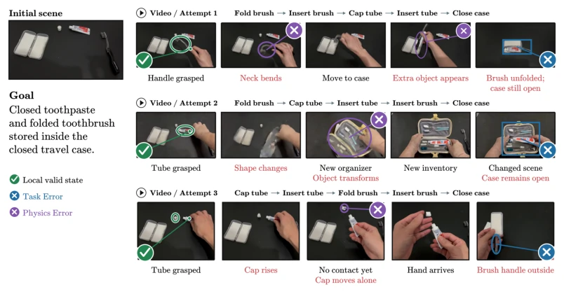
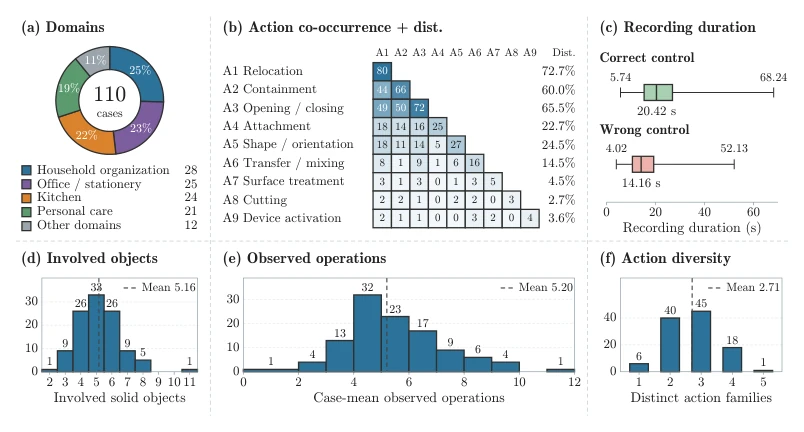
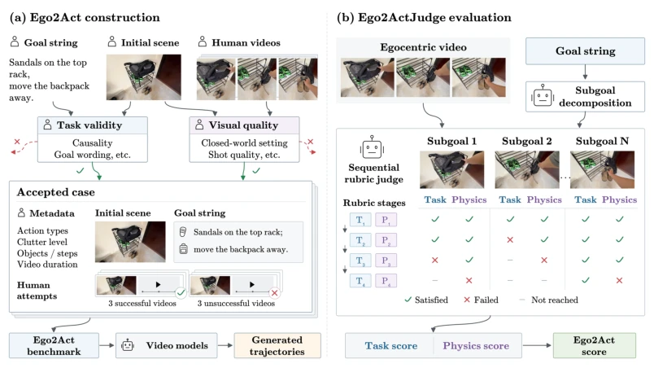
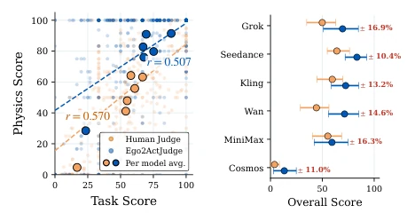
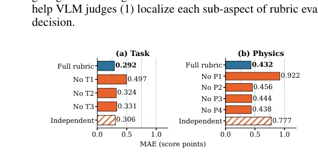
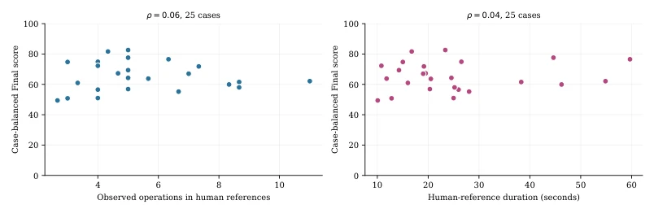
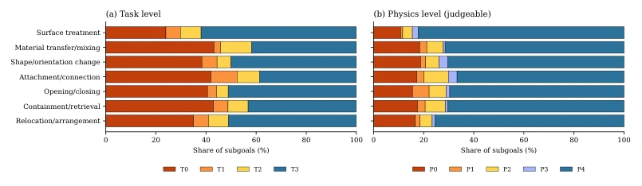
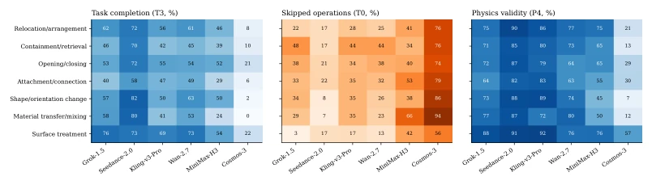
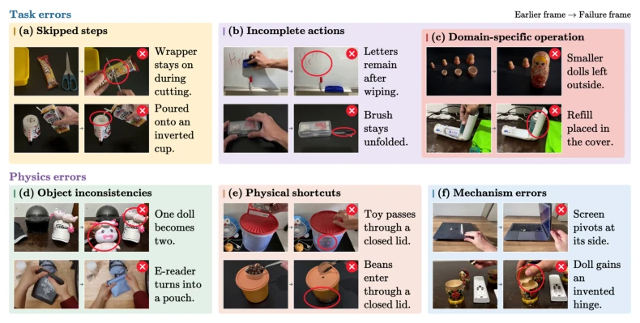
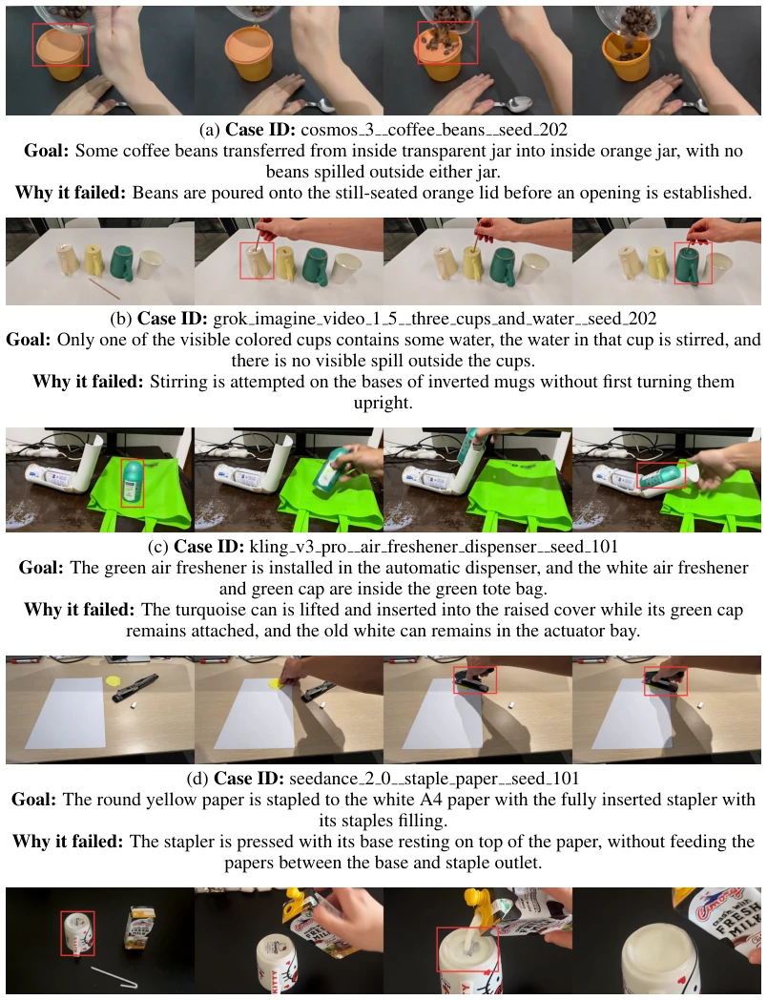

This paper pours cold water on the "world simulator" vision for Embodied AI. Although video generation models can produce aesthetically pleasing hand close-ups, they fail when tasked with real work (multi-step operations). The EGO2ACT dataset is quite large, with 2640 videos covering 110 real tasks, but the most heartbreaking is that the best model, Seedance-2.0, only scored 64 points under human evaluation. The evaluator EGO2ACTJUDGE is a highlight, capable of scoring without reference videos, with decent consistency with humans (r=0.69). However, this evaluator itself relies on manually designed rubrics, does it count as "talking to itself"? Models almost completely failed on physical contact (such as connection, mixing), indicating that current generation models are far from true physical world simulation. This work proves that "looking like" does not equal "physically correct", sounding an alarm for embodied planning. Especially, models often skip pre-steps, leading to missing subsequent states; this "hallucination" is fatal in long-horizon tasks.
Existing video generation benchmarks (such as EgoWM, EgoForge) either rely on reference videos or require step-by-step instructions, unable to test the model's ability to autonomously plan multi-step tasks. For embodied intelligence, we need models to autonomously infer intermediate steps based on high-level goals. Although PQSG and WR-Arena assess physicality, they ignore hand occlusion and dynamic views under the egocentric perspective. EgoWM and EgoForge rely on explicit steps and cannot assess open-ended planning. Therefore, a new benchmark is needed to test goal-directed manipulation. Existing work such as EgoWM by Bagchi et al. (2026) involves egocentric but assesses fidelity rather than goal completion. Shen et al. (2026)'s EgoForge is similar. We need a reference-free benchmark capable of assessing physical rationality and task completion. Additionally, existing benchmarks mostly focus on short actions, lacking multi-step physical reasoning, unable to verify the model's planning ability in complex environments.

Figure 1: EGO2ACT assesses whether different attempts at the same goal complete the required actions through physically plausible interactions. The trajectories share an initial scene and goal, with highlighted task and physics errors along each execution.

Figure 2: Composition and descriptive statistics of EGO2ACT. (a) Domain composition of the 110-case benchmark. Panels (b–e) summarize the feature distributions: (b) action-family co- occurrence and coverage, (c) human control videos duration, (d) involved solid-object counts, and (e) case-mean observed operations. Co-occurrence means joint presence within a case, and observed operations describe number of subaction per case. (f) unique action family count per case.
The overall process is divided into two steps: data construction and evaluation. Data includes 110 real scenes, each scene has initial image f1 and goal G, generating video V. Evaluator EGO2ACTJUDGE is divided into four steps: 1. Derive subgoals (Subgoals); 2. Task completion (Task Gates T1-T3, early exit); 3. Physical rationality (Physics Gates P1-P4); 4. Geometric mean aggregation. Innovation lies in reference-free (reference-free) and hierarchical gating mechanisms, ensuring both physics and tasks are indispensable. Subgoal derivation is based on scene and Goal, not relying on complete video. Task gates check action initiation, interaction process, final state. Physics gates check continuity, causality, contact, stability. Final score is the geometric mean of task score and physics score, preventing one item's full score from masking the other's failure. This design allows the evaluator to precisely locate errors, such as skipping steps or physics penetration.

Figure 3: Overview of EGO2ACT and EGO2ACTJUDGE. The collection pipeline verifies task speci- fications and human recordings to produce cases containing an f1, G, human controls, and metadata. Video models receive the f1 and G to generate task executions. EGO2ACTJUDGE derives subgoals, examines V , and applies the task and physics rubrics to produce per-component & joint scores. The rubric stages are the Task gates T1–T3 and Physics gates P1–P4 of Section 4.
Evaluated 6 models (Grok, Seedance, Cosmos, etc.). Seedance highest 64 points, Cosmos lowest 3.9 points. Found weak correlation between physics and task scores. Ablation experiments show that gating mechanism (Gating) aligns better with human judgment than independent scoring. Contact-type actions (Attachment) have the highest error rate. Human evaluation shows models often skip pre-steps or have inconsistent physical states. Evaluator-human consensus correlation r=0.69, better than VideoScore and other baselines. This indicates existing models have significant shortcomings in fine-grained physical dynamics, unable to fulfill world simulation in embodied planning. Additionally, Backbone choice also affects evaluation performance, Flash outperforms Terra.

Figure 4: Component score correlation and performance consistency across trials on 25-cases subset

Figure 5: Average MAE under rubric ablation. Lower is better. The full rubric scores gates sequentially, stopping at the first failure, whereas Independent scores all gates.
其他图片Other Figures

Figure 6: Reference action count and duration have weak observed associations with execution scores. Each point is one of 25 cases, and the vertical axis is its case-balanced Final score under EGO2ACTJUDGE. Spearman correlations are 0.06 for observed operations and 0.04 for reference duration. These associations do not establish which mechanism causes failure.

Figure 8: Subgoal-level Task and Physics outcome distributions by action type. Judgments are pooled over the six generators on 294 case–seed units and grouped by the primary action family of each subgoal. Families with fewer than 100 Task subgoals are omitted. Tk and Pk denote score levels, so T0 means the first Task gate failed and P0 means the first Physics gate failed. Physics shares are over judgeable subgoals.

Figure 9: Subgoal-level performance by action type and video generator. The heatmaps re- port Task completion (T3), skipped Task operations (T0), and physically valid transitions among judgeable Physics subgoals (P4), where Tk and Pk denote score levels. Cells with fewer than ten judgments are left blank.

Figure 11: Representative errors in generated action rollouts. Task errors: omitted prerequisites (a), incomplete outcomes (b), and incomplete outcomes in domain-specific operations (c). Physics errors: object duplication or identity changes (d), penetration through closed lids (e), and motion incompatible with object mechanisms (f). Each example pairs an earlier frame with a frame showing the error, and red circles highlight the relevant regions.

Figure 12: Examples of skipped prerequisite operations.